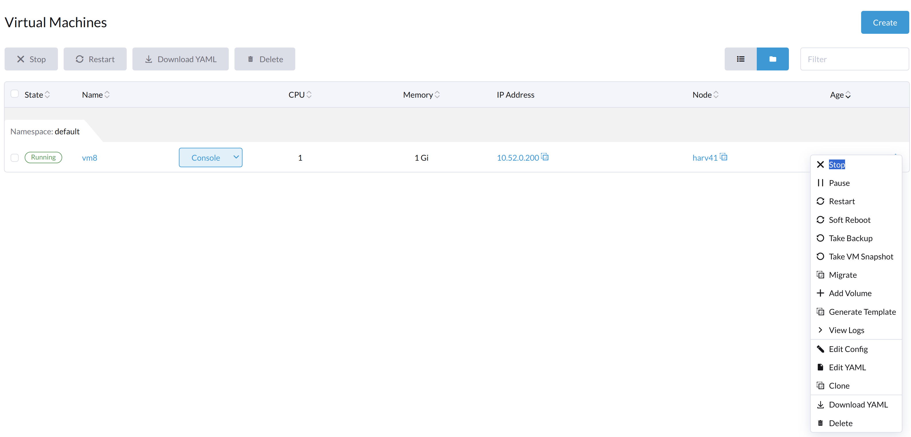
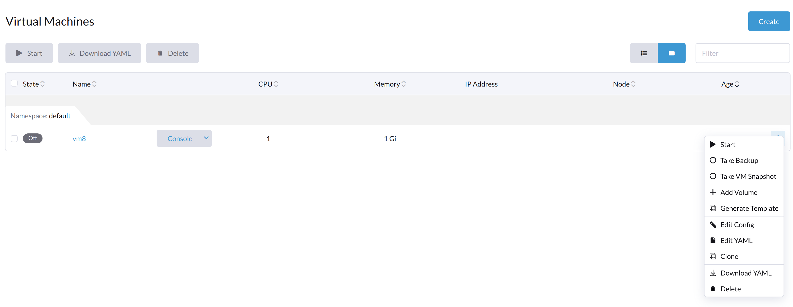

Problemas de Máquina Virtual
As seções a seguir contêm informações úteis para solucionar problemas relacionados à gestão de SUSE Virtualization VMs.
Botão de Início da VM Não Está Visível
Descrição do Problema
Em raras ocasiões, o botão Iniciar não está disponível na interface SUSE Virtualization para VMs que estão desligadas. Sem esse botão, os usuários não conseguem iniciar as VMs.

Operações Gerais da VM
Na interface SUSE Virtualization, o botão Parar está visível após uma VM ser criada e iniciada.

O botão Iniciar está visível após a VM ser parada.

Quando a VM é desligada de dentro da VM, tanto os botões Iniciar quanto Reiniciar estão visíveis.

Objetos Relacionados à VM
Uma VM em Execução
Os objetos vm, vmi e pod, que estão todos relacionados à VM, existem. O status de todos os três objetos é Running.
# kubectl get vm NAME AGE STATUS READY vm8 7m25s Running True # kubectl get vmi NAME AGE PHASE IP NODENAME READY vm8 78s Running 10.52.0.199 harv41 True # kubectl get pod NAME READY STATUS RESTARTS AGE virt-launcher-vm8-tl46h 1/1 Running 0 80s
Uma VM Parada Usando a Interface SUSE Virtualization
Apenas o objeto vm existe e seu status é Stopped. Tanto vmi quanto pod desaparecem.
# kubectl get vm NAME AGE STATUS READY vm8 123m Stopped False # kubectl get vmi No resources found in default namespace. # kubectl get pod No resources found in default namespace. #
Uma VM Parada Usando o Comando de Parar da VM
Os objetos vm, vmi e pod, que estão todos relacionados à VM, existem. O status de vm é Stopped, enquanto o status de pod é Completed.
# kubectl get vm NAME AGE STATUS READY vm8 134m Stopped False # kubectl get vmi NAME AGE PHASE IP NODENAME READY vm8 2m49s Succeeded 10.52.0.199 harv41 False # kubectl get pod NAME READY STATUS RESTARTS AGE virt-launcher-vm8-tl46h 0/1 Completed 0 2m54s
Análise de Problemas
Quando o problema ocorre, os objetos vm, vmi e pod existem. O status dos objetos é semelhante ao de Uma VM Parada Usando o Comando de Parar da VM.
Exemplo:
A VM ocffm031v000 não está pronta (status: "False") porque o pod virt-launcher está sendo encerrado (reason: "PodTerminating").
- apiVersion: kubevirt.io/v1
kind: VirtualMachine
...
status:
conditions:
- lastProbeTime: "2023-07-20T08:37:37Z"
lastTransitionTime: "2023-07-20T08:37:37Z"
message: virt-launcher pod is terminating
reason: PodTerminating
status: "False"
type: Ready
Da mesma forma, a VMI (instância da máquina virtual) ocffm031v000 não está pronta (status: "False") porque o pod virt-launcher está sendo encerrado (reason: "PodTerminating").
- apiVersion: kubevirt.io/v1
kind: VirtualMachineInstance
...
name: ocffm031v000
...
status:
activePods:
ec36a1eb-84a5-4421-b57b-2c14c1975018: aibfredg02
conditions:
- lastProbeTime: "2023-07-20T08:37:37Z"
lastTransitionTime: "2023-07-20T08:37:37Z"
message: virt-launcher pod is terminating
reason: PodTerminating
status: "False"
type: Ready
Por outro lado, o pod virt-launcher-ocffm031v000-rrkss não está pronto (status: "False") porque o pod foi concluído (reason: "PodCompleted").
O contêiner subjacente 0d7a0f64f91438cb78f026853e6bebf502df1bdeb64878d351fa5756edc98deb está encerrado, e o exitCode é 0.
- apiVersion: v1
kind: Pod
...
name: virt-launcher-ocffm031v000-rrkss
...
ownerReferences:
- apiVersion: kubevirt.io/v1
...
kind: VirtualMachineInstance
name: ocffm031v000
uid: 8d2cf524-7e73-4713-86f7-89e7399f25db
uid: ec36a1eb-84a5-4421-b57b-2c14c1975018
...
status:
conditions:
- lastProbeTime: "2023-07-18T13:48:56Z"
lastTransitionTime: "2023-07-18T13:48:56Z"
message: the virtual machine is not paused
reason: NotPaused
status: "True"
type: kubevirt.io/virtual-machine-unpaused
- lastProbeTime: "null"
lastTransitionTime: "2023-07-18T13:48:55Z"
reason: PodCompleted
status: "True"
type: Initialized
- lastProbeTime: "null"
lastTransitionTime: "2023-07-20T08:38:56Z"
reason: PodCompleted
status: "False"
type: Ready
- lastProbeTime: "null"
lastTransitionTime: "2023-07-20T08:38:56Z"
reason: PodCompleted
status: "False"
type: ContainersReady
...
containerStatuses:
- containerID: containerd://0d7a0f64f91438cb78f026853e6bebf502df1bdeb64878d351fa5756edc98deb
image: registry.suse.com/suse/sles/15.4/virt-launcher:0.54.0-150400.3.3.2
imageID: sha256:43bb08efdabb90913534b70ec7868a2126fc128887fb5c3c1b505ee6644453a2
lastState: {}
name: compute
ready: false
restartCount: 0
started: false
state:
terminated:
containerID: containerd://0d7a0f64f91438cb78f026853e6bebf502df1bdeb64878d351fa5756edc98deb
exitCode: 0
finishedAt: "2023-07-20T08:38:55Z"
reason: Completed
startedAt: "2023-07-18T13:50:17Z"
Uma diferença crítica é que as ações Stop e Start aparecem na propriedade stateChangeRequests de vm.
status:
conditions:
...
printableStatus: Stopped
stateChangeRequests:
- action: Stop
uid: 8d2cf524-7e73-4713-86f7-89e7399f25db
- action: Start
Causa principal
A causa raiz deste problema está sob investigação.
É notável que o código fonte verifica o status de vm e assume que o objeto está iniciando. Nenhuma das operações Start e Restart é adicionada ao objeto.
func (vf *vmformatter) canStart(vm *kubevirtv1.VirtualMachine, vmi *kubevirtv1.VirtualMachineInstance) bool {
if vf.isVMStarting(vm) {
return false
}
..
}
func (vf *vmformatter) canRestart(vm *kubevirtv1.VirtualMachine, vmi *kubevirtv1.VirtualMachineInstance) bool {
if vf.isVMStarting(vm) {
return false
}
...
}
func (vf *vmformatter) isVMStarting(vm *kubevirtv1.VirtualMachine) bool {
for _, req := range vm.Status.StateChangeRequests {
if req.Action == kubevirtv1.StartRequest {
return true
}
}
return false
}
Solução
Para resolver o problema, você pode forçar a exclusão do pod usando o comando kubectl delete pod virt-launcher-ocffm031v000-rrkss -n namespace --force.
Após a exclusão bem-sucedida do pod, o botão Start se torna visível novamente na interface do usuário SUSE Virtualization.
VM Presa no Estado de Início com Mensagem de Erro not a device node
Versões impactadas: v1.3.0
Descrição do Problema
Algumas VMs podem falhar ao iniciar e depois se tornarem não responsivas após o cluster ou alguns nós serem reiniciados. Na tela Dashboard da interface do usuário SUSE Virtualization, o status das VMs afetadas está preso em Iniciando.

Análise de Problemas
O status do pod relacionado à VM afetada é CreateContainerError.
$ kubectl get pods NAME READY STATUS RESTARTS AGE virt-launcher-vm1-w9bqs 0/2 CreateContainerError 0 9m39s
A frase failed to generate spec: not a device node pode ser encontrada no seguinte:
$kubectl get pods -oyaml
apiVersion: v1
items:
apiVersion: v1
kind: Pod
metadata:
...
containerStatuses:
- image: registry.suse.com/suse/sles/15.5/virt-launcher:1.1.0-150500.8.6.1
imageID: ""
lastState: {}
name: compute
ready: false
restartCount: 0
started: false
state:
waiting:
message: 'failed to generate container "50f0ec402f6e266870eafb06611850a5a03b2a0a86fdd6e562959719ccc003b5"
spec: failed to generate spec: not a device node'
reason: CreateContainerError
kubelet.log arquivo:
file path: /var/lib/rancher/rke2/agent/logs/kubelet.log E0205 20:44:31.683371 2837 pod_workers.go:1294] "Error syncing pod, skipping" err="failed to \"StartContainer\" for \"compute\" with CreateContainerError: \"failed t o generate container \\\"255d42ec2e01d45b4e2480d538ecc21865cf461dc7056bc159a80ee68c411349\\\" spec: failed to generate spec: not a device node\"" pod="default/virt-laun cher-caddytest-9tjzj" podUID=d512bf3e-f215-4128-960a-0658f7e63c7c
containerd.log arquivo:
file path: /var/lib/rancher/rke2/agent/containerd/containerd.log
time="2024-02-21T11:24:00.140298800Z" level=error msg="CreateContainer within sandbox \"850958f388e63f14a683380b3c52e57db35f21c059c0d93666f4fdaafe337e56\" for &ContainerMetadata{Name:compute,Attempt:0,} failed" error="failed to generate container \"5ddad240be2731d5ea5210565729cca20e20694e364e72ba14b58127e231bc79\" spec: failed to generate spec: not a device node"
Após adicionar informações de debug a containerd, ele identifica que a mensagem de erro not a device node está no arquivo pvc-3c1b28fb-*.
time="2024-02-22T15:15:08.557487376Z" level=error msg="CreateContainer within sandbox \"d23af3219cb27228623cf8168ec27e64e836ed44f2b2f9cf784f0529a7f92e1e\" for &ContainerMetadata{Name:compute,Attempt:0,} failed" error="failed to generate container \"e4ed94fb5e9145e8716bcb87aae448300799f345197d52a617918d634d9ca3e1\" spec: failed to generate spec: get device path: /var/lib/kubelet/plugins/kubernetes.io/csi/volumeDevices/publish/pvc-3c1b28fb-683e-4bf5-9869-c9107a0f1732/20291c6b-62c3-4456-be8a-fbeac118ec19 containerPath: /dev/disk-0 error: not a device node"
Este é um arquivo relacionado ao CSI, mas é um arquivo vazio em vez do arquivo de dispositivo esperado. Então o containerd negou a solicitação CreateContainer.
$ ls /var/lib/kubelet/plugins/kubernetes.io/csi/volumeDevices/publish/pvc-3c1b28fb-683e-4bf5-9869-c9107a0f1732/ -alth
total 8.0K
drwxr-x--- 2 root root 4.0K Feb 22 15:10 .
-rw-r--r-- 1 root root 0 Feb 22 14:28 aa851da3-cee1-45be-a585-26ae766c16ca
-rw-r--r-- 1 root root 0 Feb 22 14:07 20291c6b-62c3-4456-be8a-fbeac118ec19
drwxr-x--- 4 root root 4.0K Feb 22 14:06 ..
-rw-r--r-- 1 root root 0 Feb 21 15:48 4333c9fd-c2c8-4da2-9b5a-1a310f80d9fd
-rw-r--r-- 1 root root 0 Feb 21 09:18 becc0687-b6f5-433e-bfb7-756b00deb61b
$file /var/lib/kubelet/plugins/kubernetes.io/csi/volumeDevices/publish/pvc-3c1b28fb-683e-4bf5-9869-c9107a0f1732/20291c6b-62c3-4456-be8a-fbeac118ec19
: emptyA saída listada acima contrasta diretamente com o seguinte exemplo, que mostra o arquivo de dispositivo esperado de uma VM em execução.
$ ls /var/lib/kubelet/plugins/kubernetes.io/csi/volumeDevices/publish/pvc-732f8496-103b-4a08-83af-8325e1c314b7/ -alth total 8.0K drwxr-x--- 2 root root 4.0K Feb 21 10:53 . drwxr-x--- 4 root root 4.0K Feb 21 10:53 .. brw-rw---- 1 root root 8, 16 Feb 21 10:53 4883af80-c202-4529-a2c6-4e7f15fe5a9b
Causa principal
Após o cluster ou nós específicos serem reiniciados, o kubelet chama NodePublishVolume para o novo pod sem primeiro chamar NodeStageVolume. Além disso, o plugin Longhorn CSI monta o arquivo regular no caminho de destino de staging (anteriormente usado pelo pod excluído) para o caminho de destino, e a operação é considerada bem-sucedida.
Solução
Operação em nível de cluster:
-
Encontre os pods de suporte das VMs afetadas e os volumes Longhorn relacionados.
$ kubectl get pods NAME READY STATUS RESTARTS AGE virt-launcher-vm1-nxfm4 0/2 CreateContainerError 0 7m11s $ kubectl get pvc -A NAMESPACE NAME STATUS VOLUME CAPACITY ACCESS MODES STORAGECLASS AGE default vm1-disk-0-9gc6h Bound pvc-f1798969-5b72-4d76-9f0e-64854af7b59c 1Gi RWX longhorn-image-fxsqr 7d22h
-
Parar as VMs afetadas na interface SUSE Virtualization.
A VM pode estar travada em
Stopping, continue para o próximo passo. -
Exclua os pods de suporte forçadamente.
$ kubectl delete pod virt-launcher-vm1-nxfm4 --force Warning: Immediate deletion does not wait for confirmation that the running resource has been terminated. The resource may continue to run on the cluster indefinitely. pod "virt-launcher-vm1-nxfm4" force deleted
A VM está desligada agora.

Operação em nível de nó, nó por nó:
-
Cordon um nó.
-
Desmonte todos os volumes Longhorn afetados neste nó.
Você precisa acessar este nó via ssh e executar o comando
sudo -i umount path.$ umount /var/lib/kubelet/plugins/kubernetes.io/csi/volumeDevices/pvc-f1798969-5b72-4d76-9f0e-64854af7b59c/dev/* umount: /var/lib/kubelet/plugins/kubernetes.io/csi/volumeDevices/pvc-f1798969-5b72-4d76-9f0e-64854af7b59c/dev/4b2ab666-27bd-4e3c-a218-fb3d48a72e69: not mounted. umount: /var/lib/kubelet/plugins/kubernetes.io/csi/volumeDevices/pvc-f1798969-5b72-4d76-9f0e-64854af7b59c/dev/6aaf2bbe-f688-4dcd-855a-f9e2afa18862: not mounted. umount: /var/lib/kubelet/plugins/kubernetes.io/csi/volumeDevices/pvc-f1798969-5b72-4d76-9f0e-64854af7b59c/dev/91488f09-ff22-45f4-afc0-ca97f67555e7: not mounted. umount: /var/lib/kubelet/plugins/kubernetes.io/csi/volumeDevices/pvc-f1798969-5b72-4d76-9f0e-64854af7b59c/dev/bb4d0a15-737d-41c0-946c-85f4a56f072f: not mounted. umount: /var/lib/kubelet/plugins/kubernetes.io/csi/volumeDevices/pvc-f1798969-5b72-4d76-9f0e-64854af7b59c/dev/d2a54e32-4edc-4ad8-a748-f7ef7a2cacab: not mounted.
-
Descordonar este nó.
-
Iniciar as VMs afetadas na interface do Harvester.
Aguarde um tempo, a VM será executada com sucesso.

O arquivo csi gerado recentemente é um arquivo de dispositivo esperado.
$ ls /var/lib/kubelet/plugins/kubernetes.io/csi/volumeDevices/publish/pvc-f1798969-5b72-4d76-9f0e-64854af7b59c/ -alth ... brw-rw---- 1 root root 8, 64 Mar 6 11:47 7beb531d-a781-4775-ba5e-8773773d77f1
Endereço IP da Máquina Virtual Não Exibido
O Pacote qemu-guest-agent não está instalado
Descrição
A tela Máquinas Virtuais na interface SUSE Virtualization não exibe o endereço IP de uma máquina virtual recém-criada ou importada.
Análise
Esse problema geralmente ocorre quando o pacote qemu-guest-agent não está instalado na máquina virtual. Para determinar se essa é a causa raiz, verifique o status do objeto VirtualMachineInstance.
$ kubectl get vmi -n <NAMESPACE> <NAME> -ojsonpath='{.status.interfaces[0].infoSource}'A saída não contém a string guest-agent quando o pacote qemu-guest-agent não está instalado.
Solução
Você pode instalar o agente convidado QEMU editando a configuração da máquina virtual.
-
Na interface SUSE Virtualization, vá para Máquinas Virtuais.
-
Localize a máquina virtual afetada e, em seguida, selecione ⋮ → Editar Configuração.
-
Na aba Opções Avançadas, em Configuração da Nuvem, selecione Instalar agente convidado.
-
Clique em Salvar.
No entanto, o cloud-init é executado apenas uma vez (quando a máquina virtual é iniciada pela primeira vez). Para aplicar novas configurações de Cloud Config, você deve excluir o diretório cloud-init na máquina virtual.
$ sudo rm -rf /var/lib/cloud/*Após excluir o diretório, você deve reiniciar a máquina virtual para que o cloud-init seja executado novamente e o pacote qemu-guest-agent seja instalado.
Condição de Corrida IPv6 Entre o Pod virt-launcher e o Sistema Operacional Convidado
Descrição
A interface do usuário SUSE Virtualization não exibe o endereço IP da máquina virtual sempre que a interface de rede do pod virt-launcher adquire um endereço IPv6 link-local.
Análise
O agente convidado QEMU é responsável por relatar informações sobre o sistema operacional convidado, incluindo detalhes da interface, para a instância da máquina virtual para exibição na interface do usuário SUSE Virtualization. O problema ocorre quando a interface do pod da máquina virtual adquire um endereço link-local IPv6 e o reporta à instância da máquina virtual antes que o agente convidado QEMU possa fornecer suas próprias informações. Uma vez que isso acontece, o endereço IPv4 do agente convidado QEMU nunca é reportado devido a um bug no KubeVirt.
Você pode verificar o endereço IP da interface do pod e da instância da máquina virtual usando os seguintes passos:
-
Recupere o endereço IP da instância da máquina virtual:
$ kubectl get vmi -n <NAMESPACE> <NAME> -ojsonpath='{.status.interfaces[0].ipAddress}'
A saída mostra apenas o endereço IPv6 link-local.
-
Recupere o endereço IP da interface do pod:
$ kubectl exec -it -n <namespace> <pod-name> -- /bin/bash -c "ip a show label pod\*"
A saída corresponde ao endereço IPv6 da instância da máquina virtual.
-
Para recuperar o endereço IPv4 atribuído, abra o console serial da máquina virtual e execute
ip adentro do sistema operacional convidado.
|
Esse problema geralmente não afeta as operações e o tempo de atividade da máquina virtual. Você ainda pode acessar a máquina virtual via SSH usando o endereço IPv4 da interface de rede dela. Em certos casos, esse problema pode impactar a integração com o Rancher, causando o tempo limite na provisão e na junção de nós no cluster convidado. |
Solução
A solução alternativa é desativar o IPv6 nos parâmetros do kernel de SUSE Virtualization.
No exemplo acima, adicione ipv6.disable=1 e reinicie os nós para evitar que as interfaces de pod da máquina virtual adquiram um endereço IPv6 link-local.
Endereço IP da Máquina Virtual Intermitentemente Não Exibido
Descrição
O endereço IP de novas máquinas virtuais desaparece e reaparece intermitentemente na interface SUSE Virtualization.
Análise
O agente convidado QEMU é responsável por relatar informações sobre o sistema operacional convidado, incluindo detalhes da interface, para a instância da máquina virtual para exibição na interface do usuário SUSE Virtualization. O problema ocorre quando a instância da máquina virtual é atualizada com dados de domínio que contêm interfaces de rede vazias, o que é causado por um problema upstream do KubeVirt.
Esse comportamento é mais comumente observado no Alma Linux 9 e Rocky Linux 9, onde o agente convidado QEMU atualiza frequentemente as informações do sistema de arquivos para a instância da máquina virtual.
Para verificar se o problema existe em seu ambiente, execute o seguinte comando em diferentes momentos:
$ kubectl get vmi -n <NAMESPACE> <NAME> -ojsonpath='{.status.interfaces[0].ipAddress}'
O campo ipAddress pode estar vazio quando você executar o comando.
Para recuperar o endereço IPv4 atribuído, abra o console serial da máquina virtual e execute ip a dentro do sistema operacional convidado.
| Esse problema geralmente não afeta as operações e o tempo de atividade da máquina virtual. Você ainda pode acessar a máquina virtual via SSH usando o endereço IPv4 da interface de rede dela. |
Solução
Embora não haja uma solução alternativa direta para este problema, uma [correção upstream](https://github.com/kubevirt/kubevirt/pull/13624) otimizou o código para reduzir atualizações desnecessárias do agente convidado QEMU. Essa melhoria pode evitar que o problema ocorra.
Máquinas virtuais não agendáveis
Uma máquina virtual pode ser marcada Unschedulable devido a uma regra de afinidade não satisfeita.
Especificamente, o objeto VirtualMachine contém uma regra de afinidade semelhante à seguinte:
apiVersion: kubevirt.io/v1
kind: VirtualMachine
metadata:
name: vm100
namespace: default
spec:
affinity:
nodeAffinity:
requiredDuringSchedulingIgnoredDuringExecution:
nodeSelectorTerms:
- matchExpressions:
- key: network.harvesterhci.io/cn2
operator: In
values:
- 'true'O status do pod é Pending, e a mensagem de erro indica que nenhum nó atende aos critérios da regra de afinidade.
Exemplo:
$ kubectl get pods
NAME READY STATUS RESTARTS AGE
virt-launcher-vm100-f4nh4 0/2 Pending 0 5m12s
$ kubectl get pods virt-launcher-vm100-f4nh4 -oyaml
apiVersion: v1
kind: Pod
metadata:
name: virt-launcher-vm100-f4nh4
namespace: default
spec:
affinity:
nodeAffinity:
requiredDuringSchedulingIgnoredDuringExecution:
nodeSelectorTerms:
- matchExpressions:
- key: network.harvesterhci.io/cn2
operator: In
values:
- "true"
...
status:
conditions:
- lastProbeTime: null
lastTransitionTime: "2025-07-28T16:21:56Z"
message: '0/2 nodes are available: 1 node(s) didn''t match Pod''s node affinity/selector,
1 node(s) had untolerated taint {node.kubernetes.io/unreachable: }. preemption:
0/2 nodes are available: 2 Preemption is not helpful for scheduling.'
reason: Unschedulable
status: "False"
type: PodScheduled
...Causa raiz
SUSE Virtualization pode aplicar regras de afinidade automaticamente com base em como uma máquina virtual está configurada. No exemplo, a máquina virtual vm100 se conecta à rede do cluster cn2, e SUSE Virtualization aplica a regra de afinidade network.harvesterhci.io/cn2. No entanto, nenhum nó atende aos critérios da regra, então a máquina virtual não pode ser agendada.
Modificação não intencional do modelo de máquina virtual via YAML de configuração em nuvem
Quando você usa um modelo para criar uma máquina virtual e depois modifica os dados do usuário dessa máquina virtual usando o recurso Editar como YAML, o modelo de origem pode ser modificado inadvertidamente assim que você salvar as alterações.
Esse problema ocorre porque o sistema não dissocia corretamente a herança de configuração. Como a nova configuração permanece vinculada ao modelo de origem, salvar as alterações sobrescreve automaticamente os dados do modelo.
|
Evite usar o recurso Editar como YAML ao criar máquinas virtuais, especialmente ao usar um modelo. Em vez disso, use os campos e opções dedicados disponíveis na *Máquina Virtual: Tela de * criação. |
Para mitigar o problema, execute os seguintes passos:
-
Identifique o nome e o namespace da máquina virtual afetada.
-
Identifique o segredo do Cloud Config que está associado à máquina virtual afetada.
# Get the current Secret name linked to the VM's cloudInitNoCloud volume source: VM_NAME=<VM_NAME> VM_NAMESPACE=<VM_NAMESPACE> SECRET=$(kubectl get vm $VM_NAME -n $VM_NAMESPACE -o jsonpath='{.spec.template.spec.volumes[?(@.cloudInitNoCloud)].cloudInitNoCloud.secretRef.name}') SECRET_NAMESPACE=$(kubectl get secret -A | grep $SECRET | awk '{print $1}') echo "Current Secret: $SECRET_NAMESPACE -> $SECRET" -
Crie uma cópia independente do segredo.
Exporte o segredo atual, remova os metadados identificadores, atribua um nome único e, em seguida, aplique o segredo.
# Define a new, unique name for the secret NEW_SECRET="$VM_NAME-$(date +%s)" # Export, clean, rename, and create the new Secret kubectl get secret $SECRET -n $SECRET_NAMESPACE -o json | \ jq 'del(.metadata.creationTimestamp, .metadata.resourceVersion, .metadata.uid, .metadata.ownerReferences, .metadata.annotations["kubectl.kubernetes.io/last-applied-configuration"], .metadata.selfLink)' | \ jq '.metadata.name = "'"$NEW_SECRET"'"' | \ jq '.metadata.namespace = "'"$VM_NAMESPACE"'"' | \ kubectl apply -n $VM_NAMESPACE -f - -
Atualize a configuração da máquina virtual para usar o novo segredo.
Aponte a fonte do volume da máquina virtual
cloudInitNoCloudpara o novo segredo.# Patch the VM to replace the secretRef name VOLUME_INDEX=$(kubectl get vm $VM_NAME -n $NAMESPACE -o json | jq '.spec.template.spec.volumes | to_entries[] | select(.value.cloudInitNoCloud != null) | .key') kubectl patch vm $VM_NAME -n $VM_NAMESPACE --type='json' \ -p='[{"op": "replace", "path": "/spec/template/spec/volumes/'$VOLUME_INDEX'/cloudInitNoCloud/secretRef/name", "value": "'"$NEW_SECRET"'"}, {"op": "replace", "path": "/spec/template/spec/volumes/'$VOLUME_INDEX'/cloudInitNoCloud/networkDataSecretRef/name", "value": "'"$NEW_SECRET"'"}]'
Uma vez que o Cloud Config esteja respaldado por um segredo único, você pode usar o editor YAML da interface SUSE Virtualization para editar a configuração da máquina virtual sem afetar o modelo de origem.
Problema relacionado: #9207